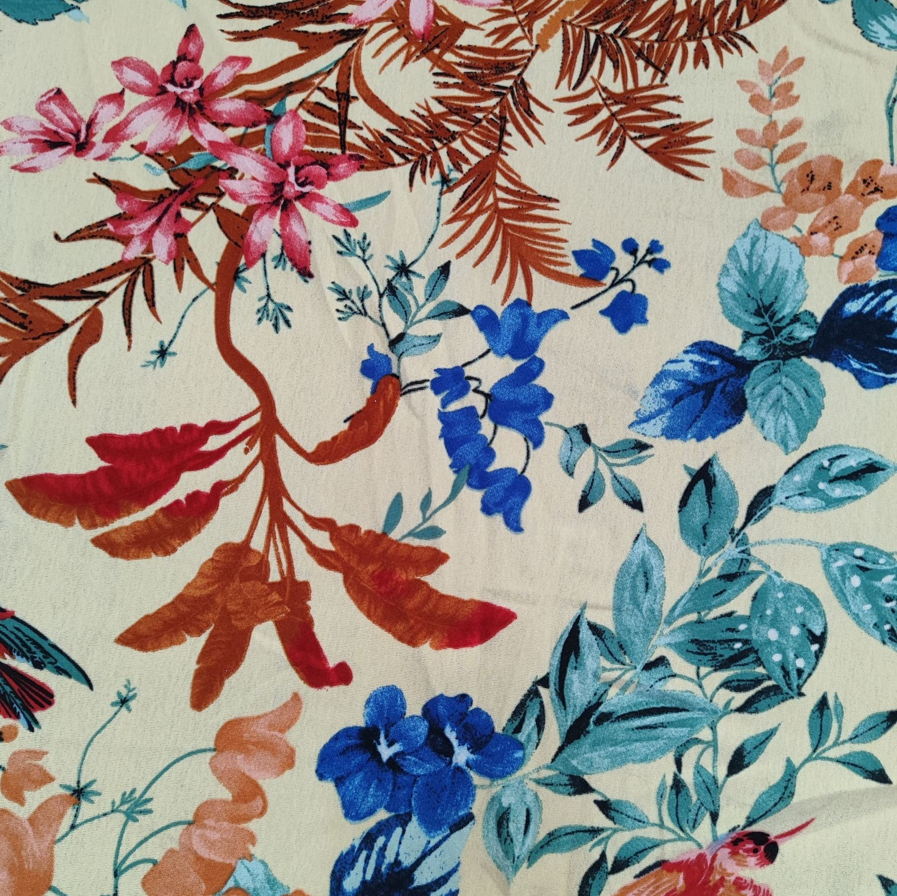
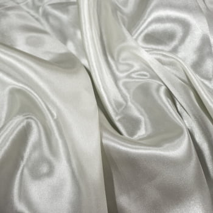
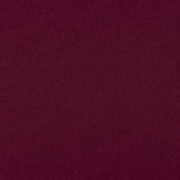

-
Tecido Crepe Duna Estampado
O Crepe Air flow é um tecido leve perfeito para o verão! Seu caimento é fluído com bastante movimento, excelente para peças femininas e camisas masculinas bem modernas.
R$ 7,90 por metro.
-
Tecido Cetim
O Charmousse é o cetim sem elastano, ideal para toucas e fronhas antifrizz, capas de salão de beleza, xuxinhas e outros acessórios, forros e peças de roupa bem folgadas. Seu caimento é fluído, com toque macio.
R$ 6,90 por metro
-
Tecido Oxfordine Marsala
O Oxfordine é a opção ideal para substituir o Oxford para quem prefere um tecido mais leve, tendo o mesmo caimento com a espessura mais fina. Ele é muito usado para peças como jalecos e camisas de uniformes corporativos, ou dolmãs e aventais para restaurantes.
R$ 9,90 por metro